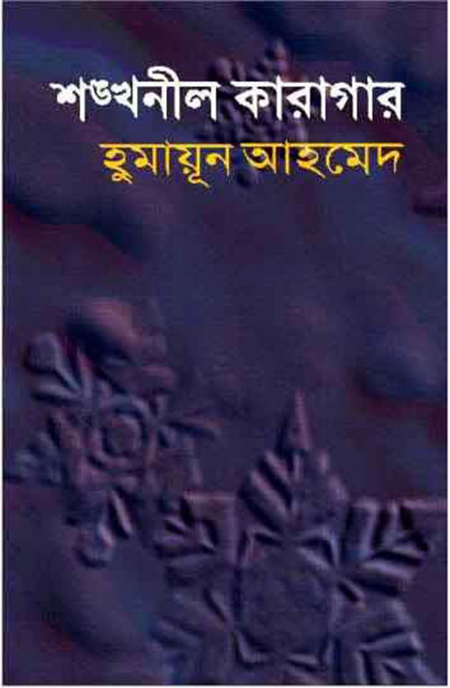
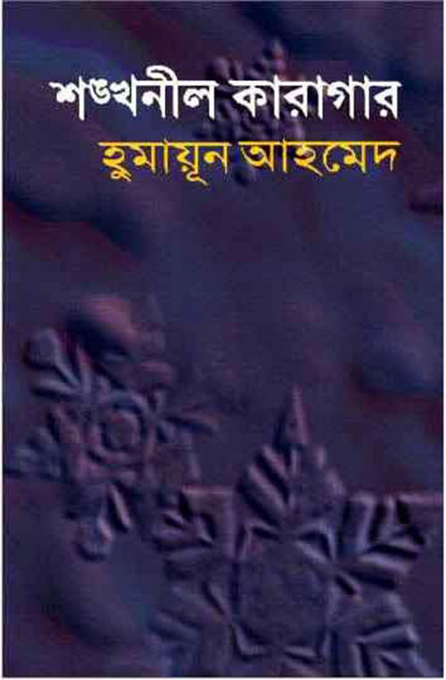
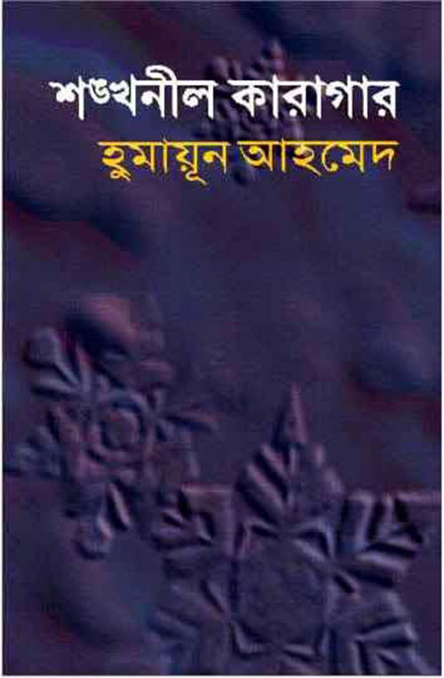
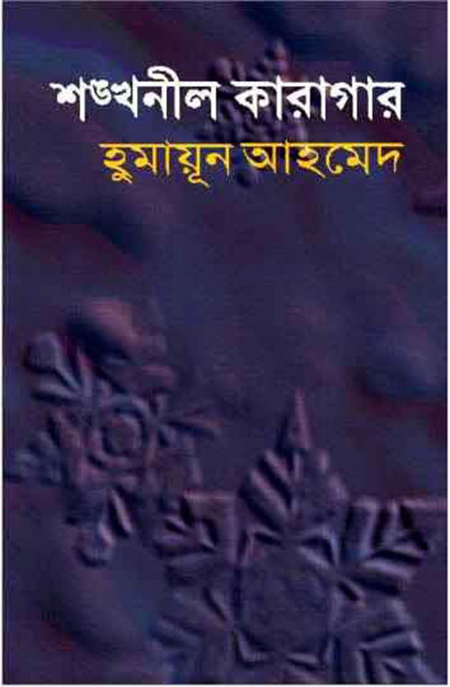

পুরস্কার ও সম্মাননা : হুমায়ুন আহমেদ তাঁর অসংখ্য বহুমাত্রিক সৃষ্টির জন্য নানা পুরস্কারে ভূষিত হন। বাংলা কথাসাহিত্যে অবদানের জন্য তিনি ১৯৭৩ সালে লেখক শিবির পুরস্কার লাভ করেন। বাংলা উপন্যাসে অসামান্য অবদানের জন্য তিনি ১৯৮১ সালে বাংলা একাডেমি পুরস্কার লাভ করেন। এছাড়া তিনি বাংলাদেশ শিশু একাডেমি পুরস্কার লাভ করেন। ১৯৮৭ সালে তিনি মাইকেল মধুসুদন পদক লাভ করেন। ১৯৯০ সালে তিনি হুমায়ূন কাদির স্মৃতি পুরস্কার লাভ করেন। এছাড়া তিনি জয়নুল আবেদীন স্বর্ণপদক লাভ করেন। ১৯৯২ সালের শঙ্খনীল কারাগার চলচ্চিত্রের জন্য তিনি শ্রেষ্ঠ কাহিনীকার বিভাগে তাঁর প্রথম জাতীয় চলচ্চিত্র পুরস্কার লাভ করেন।[৪৮] বাংলা ভাষা ও সাহিত্যে অনন্য অবদানের জন্য বাংলাদেশ সরকার তাঁকে ১৯৯৪ সালে দেশের দ্বিতীয় বেসামরিক সম্মাননা একুশে পদকে ভূষিত করে।[৪৯] একই বছরের আগুনের পরশমণি চলচ্চিত্রের জন্য শ্রেষ্ঠ চলচ্চিত্র, শ্রেষ্ঠ কাহিনীকার ও শ্রেষ্ঠ সংলাপ রচয়িতা বিভাগে তিনটি জাতীয় চলচ্চিত্র পুরস্কার লাভ করেন।[৪৮] শ্রাবণ মেঘের দিন (১৯৯৯) চলচ্চিত্রের জন্য তিনি শ্রেষ্ঠ চলচ্চিত্র, শ্রেষ্ঠ কাহিনীকার ও শ্রেষ্ঠ গীতিকার বিভাগে বাচসাস পুরস্কার অর্জন করেন।[৩১] এছাড়া চলচ্চিত্রটি সাইট অ্যান্ড সাউন্ড ম্যাগাজিনের জরিপে সমালোচকদের বিচারে সেরা দশ বাংলাদেশী চলচ্চিত্রের তালিকায় নবম স্থান লাভ করে।[৩২] তাঁর উপন্যাস অবলম্বনে তৌকির আহমেদ নির্মিত দারুচিনি দ্বীপ (২০০৭) চলচ্চিত্রের জন্য তিনি শ্রেষ্ঠ চিত্রনাট্যকার বিভাগে জাতীয় চলচ্চিত্র পুরস্কার লাভ করেন।[৫০] আমার আছে জল (২০০৮) চলচ্চিত্রের জন্য তিনি ১১তম মেরিল-প্রথম আলো পুরস্কারে সমালোচক পুরস্কার শাখায় শ্রেষ্ঠ চলচ্চিত্র পরিচালক বিভাগে মনোনয়ন লাভ করেন। তাঁর উপন্যাস অবলম্বনে মোরশেদুল ইসলাম নির্মিত প্রিয়তমেষু (২০০৯) চলচ্চিত্রের জন্য তিনি শ্রেষ্ঠ কাহিনীকার বিভাগে বাচসাস পুরস্কার অর্জন করেন।[৩১] ঘেটুপুত্র কমলা (২০১২) চলচ্চিত্রের জন্য তিনি শ্রেষ্ঠ পরিচালক এবং শ্রেষ্ঠ চিত্রনাট্যকার বিভাগে দুটি জাতীয় চলচ্চিত্র পুরস্কার লাভ করেন।[৫১] এই চলচ্চিত্রের জন্য তিনি ১৫তম মেরিল-প্রথম আলো পুরস্কারে সমালোচক পুরস্কার শাখায় শ্রেষ্ঠ চলচ্চিত্র পরিচালকের পুরস্কার লাভ করেন। তাঁর উপন্যাস অবলম্বনে মোরশেদুল ইসলাম নির্মিত অনিল বাগচীর একদিন (২০১৫) চলচ্চিত্রের জন্য তিনি ৪০তম জাতীয় চলচ্চিত্র পুরস্কারে মরণোত্তর শ্রেষ্ঠ সংলাপ রচয়িতার পুরস্কার লাভ করেন।[৫২]
পূর্ববর্তী পৃষ্ঠাগুলিতে যেতে নীচের বোতামগুলি টিপুন